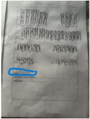

Cómo se obtiene el cariotipo
- Duración:
- 60:00
Elabora un protocolo de trabajo para tu diario de aprendizaje con los pasos a realizar para obtener un cariotipo
Cariotipo

Elabora un protocolo de trabajo para tu diario de aprendizaje con los pasos a realizar para obtener un cariotipo
Lo que vemos cambia lo que sabemos. Lo que conocemos cambia lo que vemos.
J. Piaget
A la puntuación total se podrá sumar un punto extra por buena presentación: es muy original y creativo en la presentación: portada personalizada, utilización de diferentes colores y formatos para diferenciar lo principal de lo secundario, ilustraciones adicionales...
| 4 Excelente | 3 Satisfactorio | 2 Mejorable | 1 Insuficiente | |
|---|---|---|---|---|
| Contenido | Contiene todas las tareas que se han ido realizando a lo largo del proyecto. (4) | Faltan una o dos tareas del proyecto. (3) | Faltan tres o cuatro tareas del proyecto. (2) | Faltan más de cuatro tareas del proyecto. (1) |
| Orden | Todas las tareas están ordenadas cronológicamente de manera adecuada y van acompañadas de un título adecuado. (4) | La mayor parte de las tareas están ordenadas cronológicamente y van acompañadas de un título adecuado. (3) | Hay bastantes tareas que no están ordenadas cronológicamente y/o no están acompañadas de título o este es inadecuado. (2) | La secuenciación de la mayor parte de las tareas es incorrecta y/o no aparecen títulos adecuados. (1) |
| Limpieza | La presentación está muy cuidada: letra legible, márgenes correctos, ausencia de tachones… (4) | En general, se ha cuidado la presentación: letra legible, márgenes correctos,, ausencia de tachones… (3) | No se ha mostrado demasiado interés por la presentación: letra no demasiado legible, márgenes incorrectos, presencia de tachones… (2) | La presentación está bastante descuidada (letra ilegible, márgenes incorrectos, presencia abundante de tachones… (1) |
| Corrección lingüística | No aparecen errores ortográficos, morfosintácticos ni semánticos. (4) | Aparecen de uno o dos errores ortográficos, morfosintácticos o semánticos. (3) | Aparecen tres o cuatro errores ortográficos, morfosintácticos o semánticos. (2) | Aparecen más de cuatro errores ortográficos, morfosintácticos o semánticos. (1) |
Obra publicada con Licencia Creative Commons Reconocimiento Compartir igual 4.0